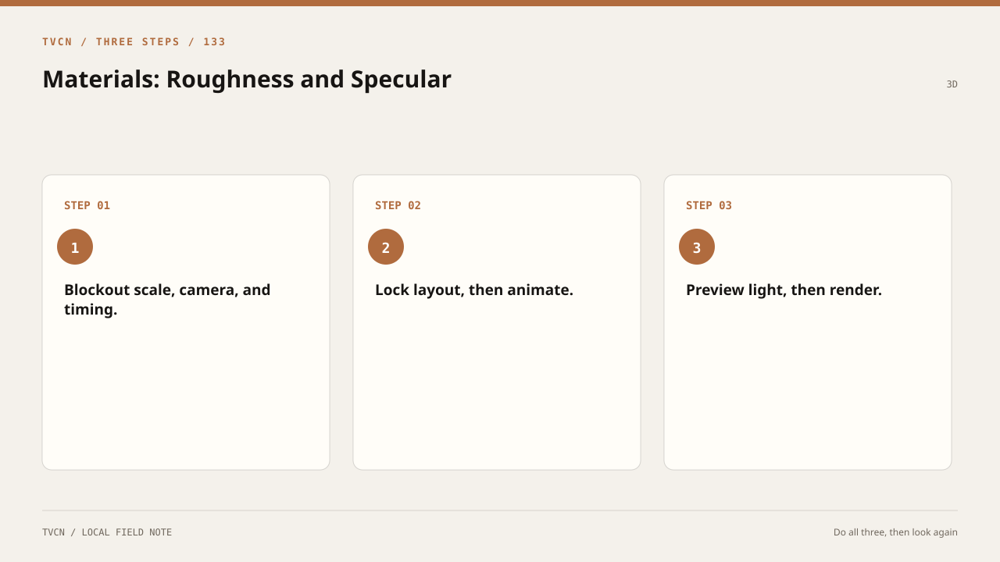

Ask what the surface does before naming it
Do not start with “metal” or “wood”; start with behavior: reflection sharpness, roughness, edge translucency, dents. The same “metal” can be mirror, brushed or rusted. The difference is behavior, not the label.
Test with a gray ball and a grid: check reflection, roughness and normal; set those three before color.
Limits
Materials cannot save a model. Without thickness, seams and bevels, the best texture still looks like paper. Fix shape first.
Materials: scale first, roughness second
A material looks fake not because the texture is low resolution, but because its scale is wrong. Wood grain at one meter and at ten centimeters is not the same image. Without a scale reference, roughness is also wrong.
| Material | Define first | Common error |
|---|---|---|
| Wood | Grain direction, board width | One tile stretched across a wall |
| Metal | Brush direction, roughness | All mirror, reads as plastic |
| Cloth | Weave density, fold scale | Texture larger than folds |
| Skin | Pore scale, oily zones | One roughness for the whole face |
Project-level checks
- Place a known-size reference (coin, A4 sheet) in the scene and calibrate texture repeats first.
- Use a grayscale roughness map, not one value. Paint oil, dry and worn areas separately.
- Start normal strength at 0.3 and add gradually; maxed-out normals darken edges.
- Judge materials under final lighting, not default HDRI. Change the light and the material reads differently.
Before delivery, make a material contact sheet: one material under hard light, backlight and shadow, to prove it is not only working in one setup.
Three-step flow

On set
Under one light, test three spheres with roughness from 0.2 to 0.8 and watch the highlight size. Set the material before adding texture.
Do this
Materials set roughness and specular before texture; those two decide plastic, wood, or metal.
- Test three spheres under one light with roughness from 0.2 to 0.8.
- Compare highlight size and edge softness.
- Lock the material before adding texture.
Avoid
Do not hide material with texture; wrong roughness looks like paper no matter the map.
Image note. Covers, diagrams and step images on this page are editorial illustrations or structure diagrams, not photographs of a test performed here; they are not evidence of measured gear performance. Where an image is AI-assisted, the caption says so. Read the test conditions in the text before treating an image as proof.